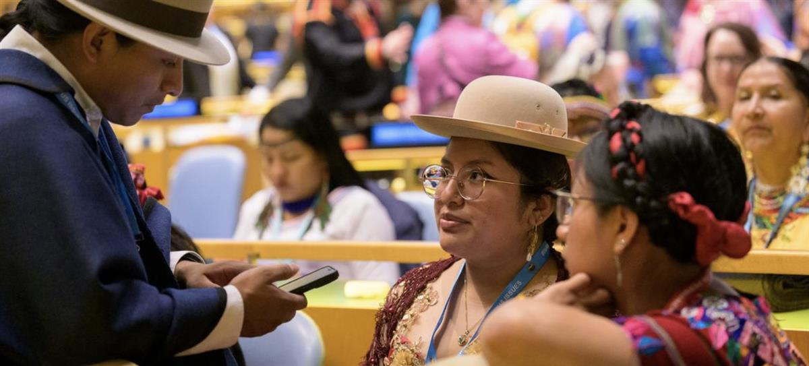
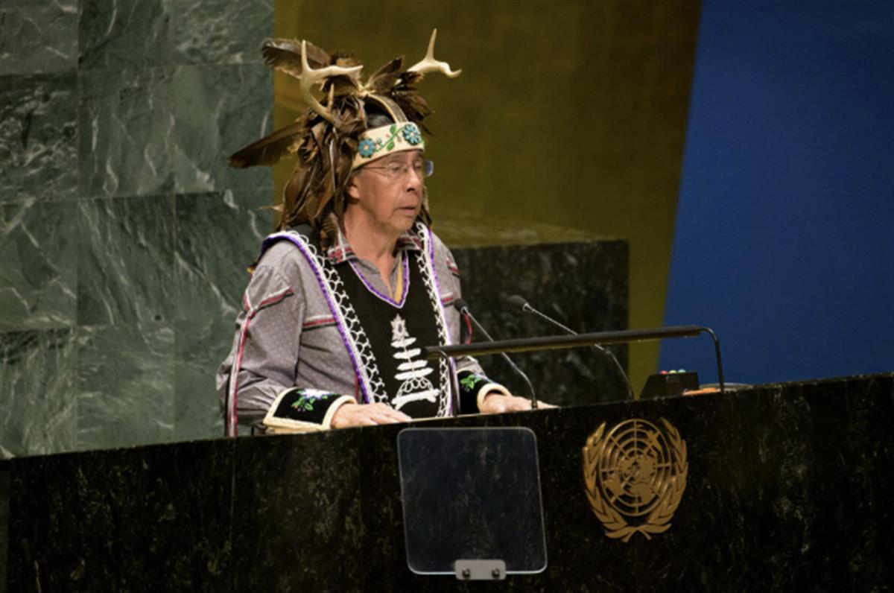

COP28/Mahmoud Khaled - Women from the Brazilian delegation attend an indigenous event during the COP28 UN Climate Change Conference in Dubai, United Arab Emirates, in December 2023.
COP28/Mahmoud Khaled - Women from the Brazilian delegation attend an indigenous event during the COP28 UN Climate Change Conference in Dubai, United Arab Emirates, in December 2023.
SOURCE: UN NEWS - GLOBAL PERSPECTIVE HUMAN STORIES
17 April 2024Human Rights
Transform landmark Indigenous rights declaration into reality: UN General Assembly President
Despite important achievements over the past decade to improve the wellbeing of Indigenous peoples, safeguard their cultures and expand their participation at the UN, “deep chasms” endure between commitments made and reality on the ground, the President of the General Assembly said on Wednesday.
“In these trying times, where peace is under severe threat and dialogue and diplomacy are in dire need, let us be an example of constructive dialogue to honour our commitments to Indigenous peoples,” Dennis Francis told world leaders and ambassadors meeting in the General Assembly Hall.
Member States convened to commemorate the 10th anniversary of the World Conference on Indigenous Peoples, where countries reaffirmed their commitment to promoting and protecting the rights of Indigenous peoples.
The outcome document voiced support for implementing the landmark UN Declaration on the Rights of Indigenous Peoples, adopted in 2007, which prescribed minimum standards for the recognition, protection and promotion of these rights.
Poverty, inequality and abuse
Mr. Francis reflected on UN achievements over this period, such as the 2030 Agenda for Sustainable Development, which promises to leave no one behind, and the International Decade of Indigenous Languages (2022-2032), which aims to both preserve these languages and protect Indigenous cultures, traditions, wisdom and knowledge.
“Despite these strides, Indigenous peoples still are more likely to live in extreme poverty, still more likely to suffer from the adverse impacts of climate change and still more likely to face dispossession and eviction from ancestral lands as well as having unequal access to health and education, compared to other groups,” he said.
Additionally, Indigenous women are still three times more likely to experience sexual violencein their lifetime compared to their non-Indigenous counterparts.
“We must intensify our actions to translate the landmark 2007 UN Declaration into meaningful change on the ground,” he said.
Ensure intrinsic rights
Li Jinhua, head of the UN Department of Economic and Social Affairs (DESA), noted that the lack of effective participation by Indigenous peoples in development processes continues to be a major obstacle in advancing efforts at the national level.
However, with UN assistance, some governments have adopted national action plans and other measures to support the effective implementation of the landmark declaration on Indigenous rights.
He urged countries to establish concrete measures to recognise and ensure the intrinsic, collective rights of Indigenous peoples, including the right of self-determination and autonomy as well as their historical property and cultural rights.
“Member States must close the persistent gaps in implementation through targeted interventions that are consistent with Indigenous peoples’ own laws, customs and traditions. More direct, long-term and predictable funding must also be part of the solution,” he added.

UN Photo/Manuel Elías - A view of a participants during the opening of the 23rd Session of Permanent Forum on Indigenous Issues.‘Mother Earth peoples’
The Vice-President of Bolivia, David Choquehuanca, highlighted challenges facing the world’s Indigenous peoples, starting with this designation.
“To begin, we have to recognise that passively, we’ve allowed ourselves to be baptised with the name of Indigenous peoples,” he said, opting instead for the terms “ancestral Indigenous peoples” and “Mother Earth peoples”.
He said Indigenous peoples participate in UN events “as disintegrated bodies, sapped of our energy and lacking structure” because “Eurocentric, anthropocentric and egocentric approaches” are favoured over the “cosmobiocentric approaches” they hold dear.

UN Photo/Manuel Elías - Chief Tadodaho Sidney Hill of the Onondaga Nation performs a traditional welcome at the opening of the 23rd Session of Permanent Forum on Indigenous Issues.
Towards full participation
With the 2030 Agenda deadline looming, the Chairperson of the UN Permanent Forum on Indigenous Issues, Hindou Oumarou Ibrahim, stressed the importance of including Indigenous peoples in voluntary national reviews on progress towards sustainable development.
“Special attention is needed for Indigenous women and girls, the custodians of our traditions and insights into sustainable living,” she said.